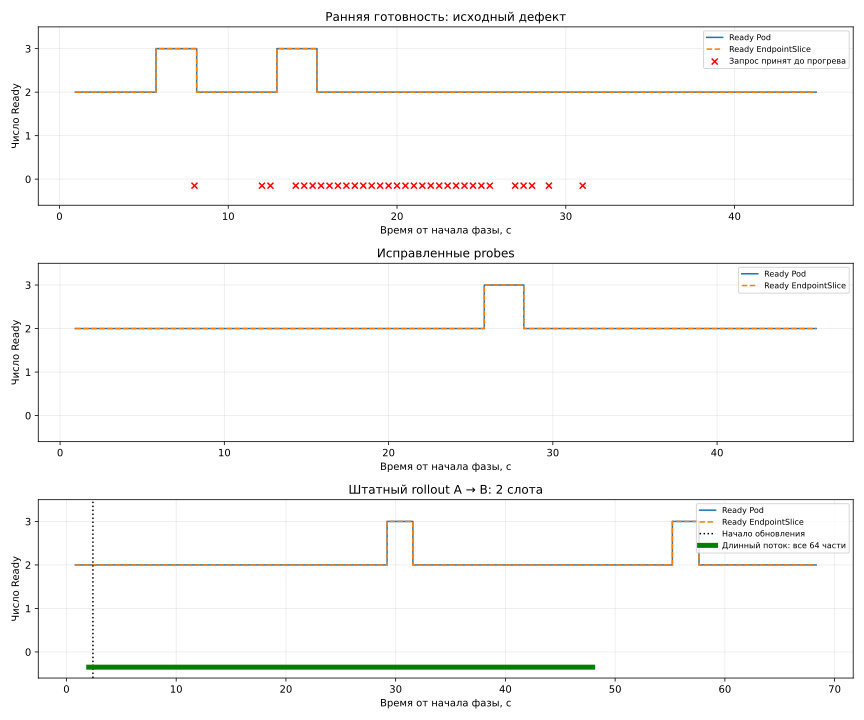
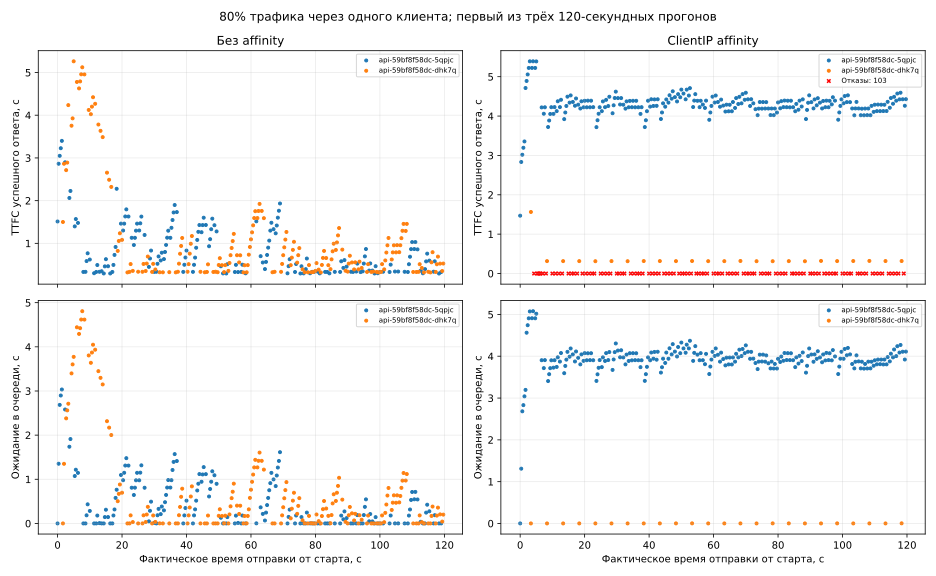
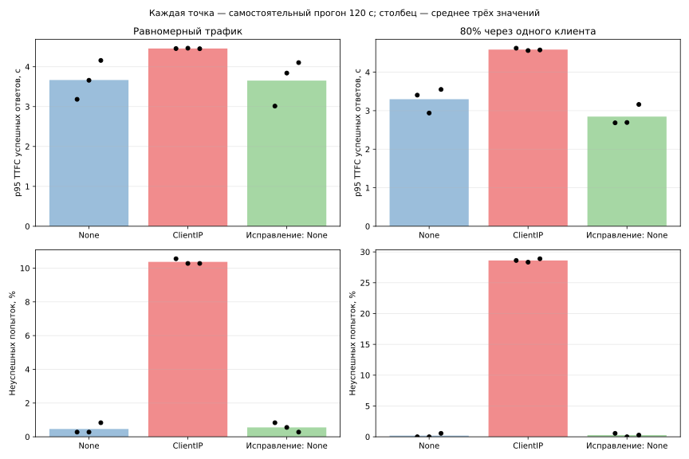
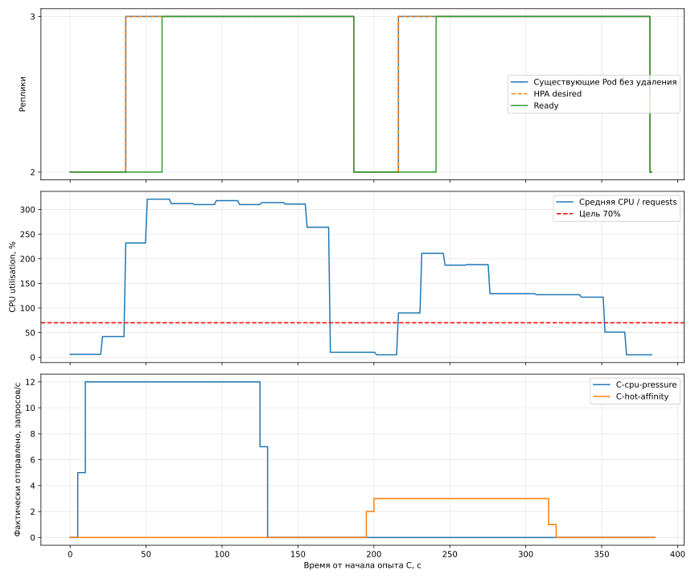

Локальный Kubernetes, управляемый CPU-backend, потоковый HTTP и воспроизводимые эксплуатационные опыты.
Режим: backend_mode=simulated. Настоящая модель в этой работе не запускалась. Измерены TTFC и inter-chunk latency, а не TTFT, TPOT или tokens/s. Контейнеры, HTTP, Service, probes, HPA, Prometheus и Grafana — настоящие.
Проект продолжает контракт сервиса ДЗ 8–10: FastAPI lifecycle, health/ready, идентичность фактически загруженного backend, request ID, ограничение обработки и очередь. В новой работе добавлены проверяемый файл имитатора, история в запросе, NDJSON-стрим, метрики, drain и Kubernetes. Предыдущие работы и их тесты не менялись.
Исходное задание сохранено отдельным коммитом 0e451b2. Итоговый код отмечен тегом hw11-results; SHA доступен командой git rev-parse hw11-results. Репозиторий: zeasshura/mlops-labs/hw11.
kind 0.30.0, Kubernetes 1.34.0, Helm 3.18.6, rootless Podman 5.8.7, cgroup v2. Один узел ограничен 4 CPU, 4 GiB RAM и 4096 PID. Приложение: Python 3.12.12, FastAPI 0.118.3, Uvicorn 0.54.0, prometheus-client 0.23.1. Прямые и транзитивные зависимости закреплены в requirements-service.txt и uv.lock. Образы: Prometheus 3.5.0, Grafana 12.1.1, kube-state-metrics 2.17.0, metrics-server 0.8.0. Фактические image ID и resource limits сохранены в results/versions.json.
До создания стенда зафиксированы свободный диск и план ресурсов: preflight.json. На диске было около 197 GiB свободного места; доступной RAM по первоначальному free -h — около 7,9 GiB. План дополнительного места — до 10 GiB. Фактические размеры перечислены в results/footprint.json: отдельно каталог работы, контейнеры и общий image cache, а не сумма виртуальных размеров слоёв.
На каждую API-реплику: requests 100m CPU / 64Mi RAM, limits 400m / 128Mi. Две реплики, при HPA максимум три. Prometheus ограничен 2h / 128MB retention и emptyDir 256Mi; Grafana — emptyDir 128Mi. Веса, kubeconfig, архивы образов, инструменты и venv не включены в Git. Другие MLflow/Postgres-контейнеры не изменялись и их volumes не удалялись.
Фактически: каталог работы вместе с игнорируемыми средами и архивами — 1.71 GiB; собственный том узла kind (/var, включая внутренний containerd) — 3.75 GiB apparent size; изменение свободного места на общем диске — 3.39 GiB. Последнее число включает общие кеши и фоновую активность хоста; виртуальные размеры образов не складываются с ним.
Файлы artifacts/model-A.json и model-B.json включены в образ. SHA-256 A: 2cbfcc2c2599d0df8999f8f80d015c710b6e96ce153936833f8c511cfc5fa4ca; B: 555a4dd71e4b461730fd594f867bc838d45cc7e87ebf524cedce1a01b7f7378c. ConfigMap задаёт ожидаемый хеш; при несовпадении процесс не готов к трафику. Все реплики получают одинаковые байты из одного образа. Проверка после замены Pod подтверждает идентичность версии и хеша.
Каждая часть ответа содержит request_id, pod, model_id, runtime_sha256 и backend_mode. В журнале есть те же идентификаторы и client IP. История диалога передаётся в запросе; локальный префиксный кеш хранит только учебные признаки попадания, а не источник истины диалога. Потеря кеша влияет на стоимость вычисления, но не меняет историю. Две контрольные строки проверены раздельными диалогами.
Startup проверяет загрузку и окончание прогрева; readiness исключает непрогретый или draining Pod из нового трафика; liveness проверяет жизнь HTTP-процесса. Startup допускает до 90 неудачных проверок с периодом 1 с при прогреве 20 с. Liveness запускается после успешного startup. Разделение следует официальному контракту Kubernetes probes.
Prometheus обнаруживает каждый помеченный Pod через Kubernetes discovery, включая ещё не Ready процессы с работающим HTTP. CPU/RAM получаются из kubelet cAdvisor через API proxy, Ready-реплики — из kube-state-metrics. Grafana развёрнута и проверена через API, экспорт реального дашборда: JSON. Восемь панелей: TTFC, полная длительность, running/waiting, завершённые req/s, ошибки, CPU, RAM, Ready. Конфигурация и PromQL находятся в chart/files. Request/session ID не используются как metric labels.
Готовность HTTP-процесса не означает готовность backend. В исходном профиле startup/readiness направлены на /health, а демонстрационный brokenReadiness допускает выполнение до warmup. Под нагрузкой непрогретые процессы оказались в Ready EndpointSlice и приняли рабочие запросы. В финальной парной проверке — 32 таких ответов; после исправления — 0. Это отдельное воспроизводимое красное/зелёное доказательство, а не ошибка импорта.
Финальная пара A-matched-broken / A-matched-fixed использует одинаковый образ 1.0.1, два прогретых исходных Pod, warmup 20 с, один слот, одинаковое расписание 80 запросов за 40 с и одно и то же действие rollout restart. Сравнивается только путь probes и допуск до прогрева. SHA расписания совпадает. Более ранние отладочные прогоны сохранены отдельно и не подменяют эту пару.
Startup/readiness проверяют реальное состояние backend. Клиентские журналы и линия Ready/EndpointSlice показывают отсутствие раннего рабочего трафика. Прямая проверка HTTP на IP холодного Pod возвращает 503; через обычный Service запросы продолжают обслуживать прогретые реплики.
Для rollout A→B заранее начат поток из 64 частей с интервалом 0,7 с. Он пересекает начало обновления и завершается полностью. В успешном фоновом прогоне 32 из 32 запросов завершились, HTTP 5xx и незавершённых ответов нет. Raw: A-rollout.jsonl; длинный запрос: rolling-long-stream.json.
Первый вариант с одним слотом дал восемь queue deadline: долгий поток занимал единственный слот обработки. Он сохранён как A-rollout-before-fix. Для отдельного опыта длительного rollout разрешены два слота; размеры CPU/RAM и границы очереди не убраны. Во всех основных сравнениях B снова один слот. Это явно различающиеся эксперименты, а не замена неудобных результатов.
При штатном завершении /drain сначала меняет readiness, затем preStop ждёт 6 с для распространения EndpointSlice; уже принятые потоки продолжаются. terminationGracePeriodSeconds=45, Uvicorn graceful timeout=30. Длинный поток заканчивается в этом бюджете. Гарантия относится к измеренной нагрузке и выбранному сроку, не к бесконечному потоку.
Неготовая B (neverReady=true) остаётся вне активных endpoints. В исправленном опыте 17/17 запросов обслужены A. Управляемый Helm rollback возвращает A, версия проверена настоящими ответами. Дополнительно устранена гонка сценария: одного helm --wait оказалось недостаточно для утверждения «все ответы уже A»; теперь перед следующим опытом явно проверяется kubectl rollout status. Неудачная попытка с шестью ответами ещё работающей B сохранена, версия в ней не переименовывалась.
Отдельно Pod принудительно удалён с grace-period=0 во время потока. Обрыв сохранён в forced-termination-request.json; восстановление — в forced-termination-recovery.json и временной линии. Принудительное прекращение не выдано за успешный graceful rollout. Автоматических скрытых повторов клиента нет.

Сравниваются обычный Service None и ClientIP над одними двумя репликами. Исправление — убрать ClientIP у рабочего Service api; контрольный обычный Service остаётся ориентиром. Ни кеш, ни стоимость CPU, ни concurrency, ни число реплик в ходе сравнения не меняются. Финальное переключение affinity не вызывает перезапуск Pod: checksum ConfigMap содержит только параметры backend, а не Service/HPA.
Четыре клиентских Pod имеют разные IP. Фактические адреса, kube-proxy config, Service spec и resource limits: matrix-config.json. Один клиент отправляет 80% запросов в hot-профиле; остальные делят остаток. HTTP keep-alive отключён: каждый запрос использует отдельное TCP-соединение. IP, который видит backend, проверяется по серверному журналу. Семантика affinity определяется Service ClientIP, а не session_id приложения.
Каждая из шести комбинаций policy × traffic выполнена трижды. На каждую: 120 с подачи, 3 запланированных запроса/с, 360 попыток; всего 6480. Список входов, длины 128/512 символов, четыре части ответа, интервал 0,06 с и расписание одинаковы между сравниваемыми политиками. SHA-256 расписаний проверяется генератором отчёта. Backend уже прогрет; кеш перед каждым прогоном подтверждённо сбрасывается.
Имитация префиксного кеша обозначена явно: LRU на восемь записей, hit 0,15 CPU-с, miss 0,6 CPU-с; computation выполняется PBKDF2 до нужного thread CPU time, а не одним sleep. При quota 400m wall time отличается от CPU time. Один активный запрос занимает слот до завершения потока; очередь до восьми, ожидание до 20 с. Результаты описывают эту модель нагрузки, не настоящую стоимость prefill или KV-cache.
Без affinity даже hot-клиент распределяется по новым соединениям между репликами. Это сохранённый отрицательный результат для предположения «80% одного клиента обязательно означают горячий Pod». При ClientIP трасса показывает устойчивую привязку и дисбаланс. Уже при uniform три из четырёх клиентов закрепились за одним Pod: доля 75%. Кеш локален, но выгода не компенсирует переполнение очереди. Точные значения всех повторов ниже; p95 относится только к успешным ответам, отказы учтены отдельно. Успехов/с — завершённые ответы на фактическую длительность пакета до последнего завершения, включая drain, а не на сумму задержек.
| Прогон | Успехи | Отказы | Deadline | TTFC p50, с | TTFC p95, с | Полный p95, с | Успехов/с | Ошибок, % |
|---|---|---|---|---|---|---|---|---|
| B-normal-uniform-1 | 359 | 1 | 0 | 0.630 | 3.182 | 3.368 | 2.982 | 0.278 |
| B-normal-uniform-2 | 359 | 1 | 0 | 0.583 | 3.660 | 3.845 | 2.980 | 0.278 |
| B-normal-uniform-3 | 357 | 3 | 0 | 0.684 | 4.158 | 4.341 | 2.966 | 0.833 |
| B-normal-hot-1 | 360 | 0 | 0 | 0.622 | 3.404 | 3.587 | 2.991 | 0.000 |
| B-normal-hot-2 | 360 | 0 | 0 | 0.581 | 2.939 | 3.122 | 2.981 | 0.000 |
| B-normal-hot-3 | 358 | 2 | 0 | 0.632 | 3.552 | 3.737 | 2.979 | 0.556 |
| B-affinity-uniform-1 | 322 | 38 | 0 | 4.089 | 4.455 | 4.639 | 2.604 | 10.556 |
| B-affinity-uniform-2 | 323 | 37 | 0 | 4.055 | 4.464 | 4.650 | 2.614 | 10.278 |
| B-affinity-uniform-3 | 323 | 37 | 0 | 4.055 | 4.451 | 4.635 | 2.617 | 10.278 |
| B-affinity-hot-1 | 257 | 103 | 0 | 4.259 | 4.622 | 4.807 | 2.068 | 28.611 |
| B-affinity-hot-2 | 258 | 102 | 0 | 4.230 | 4.562 | 4.748 | 2.079 | 28.333 |
| B-affinity-hot-3 | 256 | 104 | 0 | 4.244 | 4.577 | 4.761 | 2.066 | 28.889 |
| B-fixed-uniform-1 | 357 | 3 | 0 | 0.553 | 3.013 | 3.196 | 2.960 | 0.833 |
| B-fixed-uniform-2 | 358 | 2 | 0 | 0.696 | 3.841 | 4.024 | 2.977 | 0.556 |
| B-fixed-uniform-3 | 359 | 1 | 0 | 0.730 | 4.103 | 4.285 | 2.981 | 0.278 |
| B-fixed-hot-1 | 358 | 2 | 0 | 0.556 | 2.685 | 2.868 | 2.970 | 0.556 |
| B-fixed-hot-2 | 360 | 0 | 0 | 0.609 | 2.693 | 2.875 | 2.992 | 0.000 |
| B-fixed-hot-3 | 359 | 1 | 0 | 0.749 | 3.162 | 3.345 | 2.986 | 0.278 |
Статистика не очищена от 429, deadline, обрывов и тайм-аутов. Полный журнал: requests.csv, исходные строки — results/runs/*.jsonl, сводка — run-summary.csv. Идентификатор evidence_run вместе с request_id отделяет попытки разных опытов; в старых отладочных повторах одинаковый логический номер не объединяет две попытки. Исправленный клиент не теряет Pod/model_id на error-части потока и не считает ошибку очереди первой содержательной частью.


Выбор исправления защищается распределением, отказами и задержками из этих данных. None ценой дополнительных miss позволяет использовать обе реплики; постоянный ClientIP сохраняет локальность, но не учитывает текущую очередь. На настоящем inference engine отдельно нужны измерения стоимости пересчёта префикса, KV-memory pressure, batching, длительности decode и работа cache-aware router. По CPU-имитатору нельзя объявить победителя среди vLLM/SGLang/llm-d.
HPA autoscaling/v2, minReplicas=2, maxReplicas=3, target CPU=70% от requests; requests есть у каждого участвующего API-контейнера. metrics.k8s.io доступен, что проверено перед опытом. Управляемая вычислительная нагрузка — 12 запросов/с на 120 с. Наблюдаются desired/current/Ready и момент создания каждой новой реплики. До включения HPA был минутный idle, чтобы предыдущая нагрузка не запускала масштабирование заранее.
После снижения нагрузки ожидание полного возврата к двум Ready репликам составило 56.2 с после завершения пакета; для повторного hot-affinity опыта — 62.4 с. Окно scaleDown задано 30 с, а фактическое ожидание также включает окно resource metrics, цикл HPA и завершение Pod. Эти числа не объявляются равными параметру stabilizationWindowSeconds. Появление каждого Pod и первое наблюдение Ready отдельно выписаны в scaling-events.csv; точность Ready ограничена шагом наблюдения около 1 с. Поле HPA status.currentReplicas обновляется с задержкой своего цикла; на графике текущее число считается по реально наблюдаемым Pod без deletionTimestamp, отдельно от desired и Ready. Точные времена и условия: hpa-evidence.json, конфигурация — hpa-config.yaml, линия — timeline.jsonl.
Горячая реплика проверяется повторно при включённом HPA. При requests 100m на Pod даже 400m у одной и около нуля у другой дают примерно 200% от суммарных requests: порог 70% превышен. При условных requests 500m те же 400m суммарно дали бы около 40%, и средняя метрика могла бы скрыть очередь. Последний расчёт — объяснение, а не дополнительный измеренный прогон.
Новая Ready-реплика не обязана получить уже привязанных ClientIP-клиентов. Их связность с имеющимися endpoints сохраняется; средняя CPU-метрика создаёт ёмкость, но сама не меняет маршрутизацию. Подробная трасса C-hot-affinity и состав Pod в hpa-evidence.json позволяют увидеть малоиспользуемую новую реплику. Нагрузка, очередь и CPU по Pod сохранены отдельно от общей средней.
Алерты: p95 TTFC > 1 с и доля rejected/aborted/deadline > 10%. Для обоих минимум 10 наблюдений за 30 с, hold 15 с, evaluation 5 с. Управляемая перегрузка переводит оба правила из inactive через pending в firing; после снижения нагрузки они возвращаются в inactive. Фактически наблюдённые состояния: {"HighFirstChunkLatency": ["firing", "inactive", "pending"], "HighFailureFraction": ["firing", "inactive", "pending"]}. Источник — alert-states.jsonl; это состояния Prometheus rules, внешние уведомления не настраивались.

Клиент использует монотонные часы. TTFC = t первой содержательной части − t отправки; full latency = t завершения − t отправки; inter-chunk = t[i+1] − t[i]. Для одной части нет межчастного интервала. Ошибка очереди не считается содержательной частью. В случае настоящих токенов TPOT считался бы по N−1 интервалам после первого токена; таких измерений в этой работе нет.
В requests.csv есть scheduled/actual время отправки, send lag, первый фрагмент, завершение, HTTP status, outcome, Pod, версия, число частей и ошибка. Запланированные, отправленные, завершённые, отклонённые, оборванные и deadline перечислены отдельно. Данные генератора не превращают просроченную отправку в быстро обслуженный запланированный запрос. Полные сырые строки содержат все межчастные интервалы.
histogram_quantile(0.95, sum by (le, pod) (increase(hw11_ttfc_seconds_bucket[WINDOW]))) histogram_quantile(0.95, sum by (le) (rate(hw11_duration_seconds_bucket[2m])))
le сохраняется при суммировании classic histogram. TTFC histogram учитывает ответы с первой содержательной частью; duration — только завершённые. Для сравнений выбираются соответствующие строки клиента, тот же Pod и тот же измерительный интервал до завершения всех ответов с дополнительным scrape. Для каждого прогона окно и реальный результат запроса сохранены в *-prometheus.json; сопоставление — prometheus-client-comparison.csv.
Клиентский p95 вычислен линейной интерполяцией отсортированных наблюдений в позиции (n−1)×0,95. Prometheus интерполирует по bucket, а increase экстраполирует по дискретным scrapes: значения и восстановленное количество могут отличаться от точного журнала. Границы bucket: 0,05; 0,1; 0,2; 0,4; 0,8; 1,6; 3,2; 6,4; 12,8; 25,6; 60; +Inf секунд. Широкий bucket ограничивает точность; для промышленного SLO около 1 с нужна дополнительная граница 1 с. Источник: документация Prometheus.
Пять проверок обращаются к настоящему сервису в Kubernetes: 1) непрогретый Pod отсутствует в Ready endpoints и отвечает 503; 2) после rollback загружена A с ожидаемым хешем; 3) после удаления Pod новая реплика восстанавливает ту же версию и продолжает диалог с переданной историей; 4) отказ и оборванный поток увеличивают соответствующие counters; 5) CONTROL_ALPHA и CONTROL_BETA не смешиваются. Дополнительно два локальных HTTP-теста проверяют readiness и валидацию до вычисления.
Собственные проверки выполнены напрямую. Логи: пять Kubernetes-тестов, два локальных; фактические ответы — results/checks. Итоговый make check оставлен автору для собственного вывода. Ошибки, причины, исправления и доказательства перечислены в docs/defects.md.
Для нового запроса выбираю B: пересчёт 0,8 с дешевле ожидания A на 3 с. Решение должно учитывать кеш, оценку оставшейся очереди, running/waiting и доступную память, а не только совпадение session/IP. Если свободной ёмкости нет, нужна ограниченная очередь и явный отказ; повтор — отдельная попытка. Утверждать выигрыш без проверки распределений hit/miss, TTFC/full p95 и доли отказов нельзя.
История живёт в запросе или внешнем хранилище. После потери A другая реплика восстанавливает проверенную версию, даже если её локальный кеш холодный. Уже начатый поток не перенаправляю: A завершает его в grace period. При force kill клиент получает явный обрыв; для безопасного продолжения нужен отдельный протокол offset/idempotency, а не склейка двух независимых ответов.
Первичный инженерный кейс Anyscale / Ray Serve использует локальность префикса, но при сильном дисбалансе возвращается к выбору менее загруженной реплики. Это аргумент против вечной привязки. Промышленные результаты этого источника не перенесены на наш CPU-имитатор. Полное ревью: docs/review.md.
Ограничение источника: файл лекции 11 не предоставлен. Кейс проверен по первичному источнику, но его принадлежность именно лекции 11 пока не подтверждена. Эту связь нужно сверить с лекцией; она не выдумана.
Короткие команды: docs/run.md. Инструменты устанавливаются только в .tools, Kubernetes всегда обращается к .runtime/kubeconfig. Для нового стенда: uv sync --locked --extra analysis; bootstrap.py tools/create/preload/deploy. Длительные опыты и построение отчёта описаны там же. План записи/сдачи хранится вне репозитория.
# Удаляет только собственный кластер, после сохранения результатов: .venv/bin/python scripts/bootstrap.py delete # Временно остановить, сохранив кластер: podman stop mlops-hw11-control-plane
Не выполнялись глобальные prune, удаление чужих volumes, публикация kubeconfig, обучение или выдача имитатора за настоящую модель. Внешний ingress отсутствует; порты мониторинга проброшены только на 127.0.0.1. TLS-проверка kubelet у metrics-server ослаблена только для локальных self-signed сертификатов kind и не предлагается как production-настройка.
Один локальный узел, общий хост с мониторингом, ограниченные CPU и учебный LRU. Три повтора характеризуют этот стенд и это расписание, не все реальные диалоги. Cache hit/miss заданы искусственно, batching/KV-memory/GPU/настоящие токены не измерялись. Принудительный обрыв честно учтён; штатный rollout проверен в конкретном бюджете потока. HPA CPU не устраняет плохую маршрутизацию. После TTL 2h старые live-метрики исчезают, поэтому запросы Prometheus, сырые журналы, экспорт дашборда и четыре графика сохранены в репозитории.